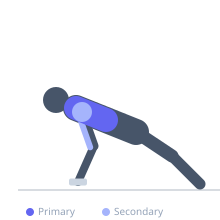
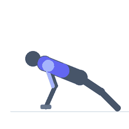

Exercise guide / Deficit Push-Up
Deficit Push-Up
The deficit push-up is performed with the hands elevated on platforms, blocks, or dumbbells, allowing the chest to descend below the level of the hands for a deeper range of motion than a standard push-up. This extended stretch under load increases time under tension and pectoral recruitment, making it a more demanding bodyweight pressing variation.
Primary muscles
pectoralis major sternal
pectoralis major clavicular
Secondary muscles
deltoid anterior
triceps lateral head
Stabilizers
transverse abdominis
external oblique
Equipment
No Equipment (Bodyweight)
Optional
Dumbbell (Fixed)


Starting position
- Place hands on two elevated platforms (push-up handles, dumbbells, or sturdy blocks) slightly wider than shoulder width. Assume a push-up position with straight body alignment.
Setup
- Set the platforms at an equal height between 4 and 6 inches. Ensure they are stable and will not slide on the surface.
Steps
- Step 1: Begin in a high plank position with hands on the platforms, body in a straight line.
- Step 2: Lower the chest between and below the platforms by bending the elbows to roughly 45 degrees.
- Step 3: Continue lowering until the chest is below the level of the hands, feeling a deep stretch.
- Step 4: Press powerfully upward through the palms, extending the elbows fully at the top.
- Step 5: Maintain a rigid plank body position from head to heels throughout.
Coaching cues
- Chest drops below the hands — that's the whole point
- Keep the body rigid from heels to crown
- Press hard through the platforms on the way up
Breathing
- Inhale as you lower the chest toward the floor. Exhale forcefully as you push back up.
Range of motion
- Descend until the chest drops 2–4 inches below the hand level for a meaningful deficit. Full elbow extension at the top.
Tempo
- 3-1-1-0
Common mistakes
- Allowing the hips to sag downward on the descent
- Not descending low enough to benefit from the deficit
- Flaring the elbows to 90 degrees, increasing shoulder stress
Safety
- Ensure the platforms are on a non-slip surface
- Only perform this variation if you can complete standard push-ups with solid form
- Avoid if you have shoulder instability or rotator cuff issues
Training
- strength: 5–10 reps
- hypertrophy: 10–20 reps
- strength: 3–5 sets
- hypertrophy: 3–4 sets
- Rest: {'strength': 120, 'hypertrophy': 60}